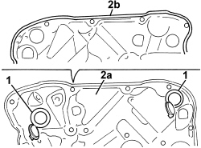

7205E37 STRIPPING FRONT SIDE DOOR INTERIOR SUPPORT FRAME
- Path
- Procedures > 72 PANELS AND FRAMES > 7205 STRIPPING FOR REPLACEMENT INTERVENTIONS > 7205E EXTERIOR PARTS > 7205E37 STRIPPING FRONT SIDE DOOR INTERIOR SUPPORT FRAME
- Kind
- repair procedure (removal / refitting; the operation number is the code)
- Applies to
- all engines; all production periods
- Interactive page
- https://sloeber94.github.io/elrnDB/alfa/159/en/#/939011435
Applies to: all engines; all production periods
 Removing
Removing
 Refitting
RefittingOp. 5570T90 FRONT SPEAKER (ONE), LEFT OR RIGHT - R.R
Op. 5505A43 CONTROL UNIT (DIGITAL NETWORK NODE) IN DRIVER'S DOOR - R.R. WITH PANEL REMOVED
or
Op. 5505A47 PASSENGER SIDE DOOR CONTROL UNIT DIGITAL NETWORK MODE R R WITH PANEL REMOVED
Op. 7005M27 ELECTRIC WINDOW MECHANISM FOR ONE FRONT DOOR LH OR RH - R.R WITH SUPPORT FRAME REMOVED
Op. 7005D24 FRONT DOOR WINDOW REAR GUIDE - R R
Op. 5505B10 FRONT DOOR WIRING (ONE), LEFT OR RIGHT - R.R. WITH WATER GUARD OR FRAME DETACHED
1. Prise the covers up from the mounting frame.
2. Recover frame (2a) with the perimeter seal (2b).

Applies to: all engines; all production periods
Refitting
Removing- Check that the mounting frame and the gasket are not damaged.
- Prise the covers up from the mounting frame.
Op. 5505B10 FRONT DOOR WIRING (ONE), LEFT OR RIGHT - R.R. WITH WATER GUARD OR FRAME DETACHED
Op. 7005D24 FRONT DOOR WINDOW REAR GUIDE - R R
Op. 7005M27 ELECTRIC WINDOW MECHANISM FOR ONE FRONT DOOR LH OR RH - R.R WITH SUPPORT FRAME REMOVED
Op. 5505A43 CONTROL UNIT (DIGITAL NETWORK NODE) IN DRIVER'S DOOR - R.R. WITH PANEL REMOVED
or
Op. 5505A47 PASSENGER SIDE DOOR CONTROL UNIT DIGITAL NETWORK MODE R R WITH PANEL REMOVED
Topics linked from this page (8)
- 5505A43 CONTROL UNIT (DIGITAL NETWORK NODE) IN DRIVER'S DOOR - R.R. WITH PANEL REMOVED
- 5505A47 PASSENGER SIDE DOOR CONTROL UNIT DIGITAL NETWORK MODE R R WITH PANEL REMOVED
- 5505B10 FRONT DOOR WIRING (ONE), LEFT OR RIGHT - R.R. WITH WATER GUARD OR FRAME DETACHED
- 5570T90 FRONT SPEAKER (ONE), LEFT OR RIGHT - R.R
- 7005D24 FRONT DOOR WINDOW REAR GUIDE - R R
- 7005M27 ELECTRIC WINDOW MECHANISM FOR ONE FRONT DOOR LH OR RH - R.R WITH SUPPORT FRAME REMOVED
- 7005M28 FRONT SIDE DOOR ELECTRICALLY OPERATED WINDOW MOTOR - R.R. WITH DOOR PANEL/SUPPORT FRAME REMOVED
- 7005N20 FRONT SIDE DOOR LOCK MOTOR/CATCH ASSEMBLY, LEFT OR RIGHT - R.R WITH DOOR PANEL AND SUPPORT FRAME REMOVED